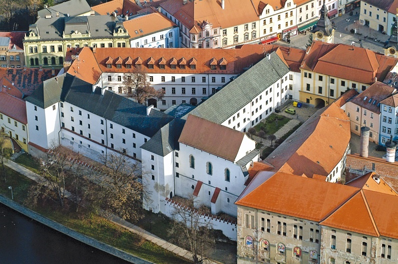

P Í S E K
CO NAVŠTÍVIT
Kamenný most v Písku

Neoficiálně známí jako Jelení most, je nestarší dochovaný most v České republice. Most, postavený v gotickém slohu, překlenuje řeku Otavu asi 110 km jižně od hlavního města Prahy. Na mostě jsou umístěny repliky barokních soch a kříže.
adresa: ul.Velké náměstí, 379 01 Písek
Hrad Písek
Částečně dochovaný gotický hrad, stojící na západním kraji historického centra města nad pravm břehem řeky Otavy. Od počátku dvacátého století sídlí v hradních prostorách Prácheňské muzeum. Samotný hrad je chráněn jako kulturní památka.
adresa: ul.Velké náměstí, 379 01 Písek
otvírací doba: 9:00-18:00
Kostel Narození Panny Marie

Římskokatolický kostel Narození Panny Marie je trojlodní bazilika, která se nachází na jižním okraji historického centra v jihočeském městě Písek. Dominantní kostelní věž na jižní straně západního průčelí se stala jako tzv. Písecká věž symbolem celého města.
kontakty:
603 848 297
rkf.pisek@dicb.cz
https://www.farnostpisek.cz/kostely/kostel-narozeni-panny-marie
adresa: ul. Leoše Janáčka, 379 01 Písek
RESTAURACE
Pomodoro Ristorante Italiano
 |
hodnocení:⭐⭐⭐⭐⭐
cenové zařazení:$$
adresa: |
kontakty: 602 176 651 http://www.pomodoropisek.cz/ |
Travel cafe Písek
 |
hodnocení:⭐⭐⭐⭐⭐
cenové zařazení:$ druh restaurace: Bistro, kavárna
adresa: |
kontakty: 770 650 158 https://www.facebook.com/travelcafepisek/ |
Restaurace Ostrov
 |
hodnocení:⭐⭐⭐⭐⭐
cenové zařazení:$$$
adresa: |
kontakty:
770 171 171 info@restauraceostrovpisek.cz https://www.restauraceostrovpisek.cz/ |